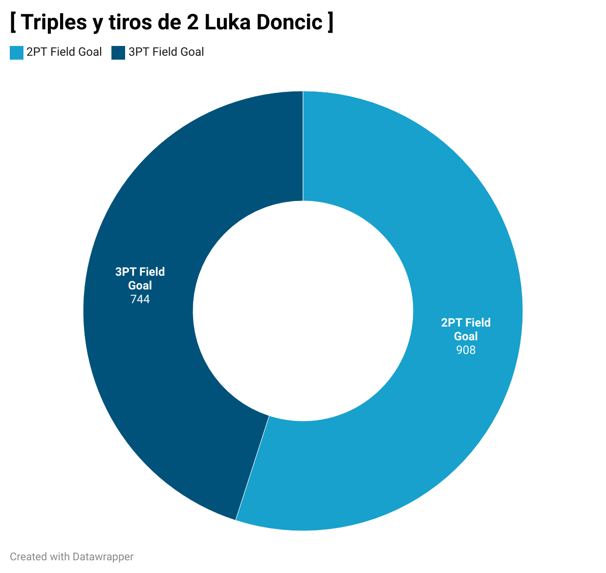

El chef del triple: Stephen Curry
1 Introducción
En la actualidad, la ciencia de datos se ha consolidado como una herramienta fundamental en numerosos ámbitos, y el deporte no es una excepción. La capacidad de recopilar, procesar y analizar grandes volúmenes de datos ha transformado la manera en que los equipos compiten, los jugadores entrenan y los aficionados comprenden el juego. A través de técnicas de análisis estadístico y visualización de datos, es posible identificar patrones ocultos, optimizar estrategias y evaluar de forma objetiva el impacto de los deportistas en la historia de su disciplina.
El baloncesto, como deporte global, ha experimentado una revolución en las últimas décadas, en gran parte gracias a la introducción de nuevos estilos de juego y a la evolución de las estrategias ofensivas, destacándose particularmente el auge de los triples. Este cambio ha sido impulsado por la figura de Stephen Curry, quien no solo ha redefinido el rol del tirador en la NBA, sino que también ha impactado la forma en que los equipos diseñan sus estrategias ofensivas y entrenan a sus jugadores. Su capacidad para anotar desde distancias cada vez más largas ha desafiado las normas establecidas y ha provocado una tendencia que ha modificado para siempre la dinámica del juego.
En este trabajo, aplicaremos técnicas básicas de análisis y visualización de datos para estudiar la influencia de Stephen Curry en la NBA y en el baloncesto mundial. Comenzaremos con una visión general de la liga, analizando cómo ha evolucionado el número de triples intentados y anotados a lo largo de los años, y cómo la tendencia ha ido cambiando desde la temporada de los primeros registros de Curry en la NBA. Posteriormente, nos adentraremos en los equipos que más han destacado en este aspecto, comparando sus estadísticas a lo largo de los años y observando cómo la tendencia ha impactado en su rendimiento. Finalmente, nos centraremos en algunos jugadores clave, como Stephen Curry y su impacto en las estadísticas de triples, para entender cómo su estilo de juego ha influido en la liga y en el baloncesto en general.
Este análisis no solo proporcionará una visión de cómo los jugadores han cambiado la forma en que se juega el baloncesto, sino también cómo el análisis de datos ha permitido desentrañar patrones que antes pasaban desapercibidos. A través de gráficos interactivos, scatter plots, bar charts, exploraremos estas tendencias y descubriremos el impacto de la evolución del juego a lo largo de los años.
1.1 Audiencia
Este trabajo está dirigido principalmente a personas interesadas en el análisis de datos deportivos, aficionados al baloncesto y profesionales del sector (como entrenadores, analistas o periodistas especializados) que buscan comprender el impacto de los cambios en las estrategias de juego a través del uso de datos. También se considera como público potencial a estudiantes de ciencia de datos o disciplinas afines, interesados en aplicar sus conocimientos a contextos reales y atractivos como el deporte profesional.
1.2 Objetivo
El objetivo principal es proporcionar una visión analítica y visual sobre cómo la figura de Stephen Curry y su enfoque en el tiro de tres puntos han influido significativamente en la NBA. A través del análisis de datos históricos y visualizaciones interactivas, se pretende identificar y explicar las tendencias que han transformado la manera en que se juega al baloncesto, tanto a nivel de jugadores como de equipos.
1.3 Enfoque y Presentación
Se ha optado por una presentación tipo informe visual, estructurada como un artículo con narrativa progresiva. Este enfoque facilita tanto la lectura como la interpretación de datos, guiando al lector desde un análisis global de la liga hasta un estudio detallado de jugadores representativos. La combinación de gráficos interactivos y explicaciones textuales permite una comprensión más profunda de los patrones observados.
1.4 Mensaje
El mensaje central de este trabajo es que el baloncesto ha vivido una revolución estratégica y estilística en la última década, marcada por un incremento masivo en el uso del tiro de tres puntos. Este cambio, liderado simbólicamente por Stephen Curry, no solo ha redefinido la manera de anotar en la NBA, sino que ha tenido un impacto global en el deporte. A través de visualizaciones comparativas y datos claros, se pone en evidencia cómo esta transformación ha influido en los patrones de juego y en el desarrollo de nuevos perfiles de jugador.
1.5 Herramientas y Justificación
Para el desarrollo de este análisis y sus visualizaciones, se utilizaron diversas herramientas especializadas que permitieron combinar precisión analítica con una presentación visual atractiva e interactiva:
RStudio + Quarto: Usado como entorno principal de desarrollo. RStudio permitió trabajar en R de forma eficiente, y Quarto facilitó la creación de un documento reproducible en formato HTML, integrando código, texto y visualizaciones de forma profesional.
Plotly: Utilizado para generar gráficos interactivos (como el bar plot por equipo a lo largo de las temporadas), permitiendo al lector explorar la evolución de los datos de forma dinámica.
ggplot2: Herramienta clave para construir visualizaciones estáticas de alta calidad, como los scatter plots que muestran la distribución espacial de los tiros de cada jugador.
Datawrapper: Utilizada mediante su plataforma web para construir gráficos circulares (pie charts) con un diseño claro y exportarlos en formato PNG, facilitando su integración visual sin necesidad de programación adicional.
D3.js + D3plus: Integrada mediante la librería d3plus, ya que la alternativa r2d3 presentaba problemas de rendimiento.
2 Análisis del triple a nivel global
En esta sección exploraremos el fenómeno que marcó un antes y un después en el baloncesto moderno: Stephen Curry, apodado “El Chef” por su maestría preparando y ejecutando triples desde cualquier ángulo. Analizaremos cómo su estilo de juego centrado en lanzamientos de larga distancia no solo transformó las estrategias de los Golden State Warriors, sino que también contagió su influencia a toda la NBA e incluso a competiciones internacionales como la Euroliga.
2.1 Contexto Histórico del Tiro de Tres en la NBA: Antes de la Revolución de Curry
Stephen Curry nació el 14 de marzo de 1988 en Akron, Ohio, aunque creció en Charlotte, Carolina del Norte. Hijo del exjugador de la NBA Dell Curry, destacó desde muy joven por su puntería y rapidez de ejecución. Tras una brillante etapa universitaria en Davidson College, donde lideró la NCAA en anotación y llevó a su modesto equipo a instancias históricas del torneo nacional, fue seleccionado en el 7.º puesto del Draft de la NBA de 2009 por los Golden State Warriors. A partir de ese momento, comenzó una carrera meteórica: redefinió los límites del tiro de tres puntos, ganó múltiples campeonatos, dos premios MVP de temporada regular, y se consolidó como el máximo exponente del baloncesto de perímetro.
Antes de profundizar en el impacto de Stephen Curry, es fundamental contextualizar la situación previa en el baloncesto profesional. Analizaremos cómo era el volumen y la eficacia de los lanzamientos de tres puntos en la NBA en las décadas anteriores a su llegada, especialmente desde la temporada 1996-97 hasta la 2008-09. Esta visión de conjunto nos permitirá entender el punto de partida y dimensionar mejor la magnitud del cambio que provocó “El Chef” en el juego.
Para ello, exploraremos una serie temporal que nos muestra los promedios de triples intentados y anotados en la NBA hasta justo antes de la temporada en que Curry comenzó a destacar. A través de estos datos, podremos observar cómo la liga se encontraba en términos de efectividad y volumen de lanzamientos de tres puntos antes de la irrupción de Curry, lo que nos proporcionará un contexto crucial para entender el impacto de su estilo de juego y su influencia en la evolución de la estrategia ofensiva en el baloncesto profesional.
Se puede observar que, antes de la llegada de Stephen Curry a la NBA, ya se percibía una leve tendencia creciente en los intentos de triples (3PA) a lo largo de los años. Este aumento progresivo en los intentos de triples iba acompañado de un crecimiento proporcional en las conversiones de triples (3PM), lo que refleja cómo los equipos comenzaban a incorporar esta táctica en sus estrategias ofensivas. Sin embargo, el impacto de Curry no fue simplemente un factor incremental, sino que catalizó una transformación radical en el uso del tiro de tres puntos, impulsando a toda la liga hacia una dependencia mucho mayor de este recurso como arma principal.
2.2 La Revolución de los Triples: El Impacto de Curry en la NBA
Tras contextualizar la situación previa a la llegada de Stephen Curry, ampliamos ahora el análisis para incluir también las temporadas posteriores a su debut, con especial atención a lo que ocurre a partir de la temporada 2012-13, cuando su influencia comienza a ser decisiva.
Aunque ya se observaba un crecimiento paulatino en los lanzamientos de tres puntos, es en este periodo cuando se produce una verdadera transformación en la forma de jugar al baloncesto. El triple deja de ser un recurso puntual y pasa a convertirse en una herramienta estratégica central. El volumen de intentos (3PA) y de anotaciones (3PM) se dispara, reflejando una revolución impulsada por la efectividad y el estilo de juego del propio Curry y sus Golden State Warriors.
A continuación, se presentan dos visualizaciones:
Una serie temporal que muestra la evolución general desde la temporada 1996-97 hasta 2019-20.
Un gráfico de barras centrado en cuatro temporadas clave (1996-97, 2009-10, 2012-13 y 2019-20) para ilustrar comparativamente la magnitud del cambio.
En el gráfico anterior se observa una línea relativamente estable durante los años del auge de los Miami Heat, lo cual refleja que, aunque contaron con figuras de la talla de LeBron James, su estilo de juego no se centraba especialmente en el tiro de tres puntos. Miami se caracterizó más por su defensa, su juego físico y su cohesión como equipo, en lugar de un enfoque triplista.
Por el contrario, el impacto de Stephen Curry no fue inmediato. Sus primeras temporadas en la NBA estuvieron marcadas por diversas lesiones que limitaron su continuidad y evolución. Sin embargo, a partir de la campaña 2012-13, su estilo de juego basado en el lanzamiento exterior comenzó a transformar visiblemente el panorama de la liga. El crecimiento en los intentos y aciertos de triples no solo se volvió sostenido, sino que adquirió una dimensión exponencial.
De hecho, si nos fijamos con atención, este incremento se acelera aún más a partir de su primera temporada como Jugador Más Valioso (MVP), marcando el inicio de una auténtica revolución táctica en la NBA.
El gráfico muestra claramente una evolución gradual en los intentos de triples por partido entre las temporadas 1996-97 y 2012-13, con un aumento moderado desde aproximadamente 17 hasta 20 intentos por encuentro. Sin embargo, a partir de la temporada 2012-13, se aprecia un cambio radical: los intentos de triple se disparan, alcanzando los 34 lanzamientos por partido en la temporada 2019-20. Esta explosión coincide con la consolidación del estilo de juego de Stephen Curry y su influencia directa sobre la liga.
Lo más llamativo es que este aumento masivo en la cantidad de lanzamientos vino acompañado de una ligera mejora o mantenimiento en la eficiencia (porcentaje de acierto), lo que en términos estratégicos representa una mejora significativa. Al mantener —o incluso mejorar ligeramente— el acierto desde el triple mientras se lanza mucho más, los equipos aumentan su rentabilidad ofensiva. Este fenómeno refleja cómo la influencia de Curry y la analítica moderna transformaron la forma en la que se construyen las ofensivas en la NBA actual.
Para complementar el análisis, el gráfico de dispersión entre intentos (3PA) y conversiones (3PM) de triples por temporada muestra una relación prácticamente lineal, lo que indica que la eficiencia en el tiro de tres puntos no se ha visto comprometida a pesar del aumento en el volumen de lanzamientos. Esta proporción relativamente constante sugiere que los equipos no solo tiran más, sino que lo hacen con una eficacia comparable o incluso superior, reforzando la idea de que el triple se ha consolidado como una herramienta ofensiva altamente rentable en la era moderna del baloncesto.
3 Análisis del triple a nivel de equipo
Después de examinar la evolución del triple en la NBA desde una perspectiva global, resulta interesante profundizar en cómo se ha manifestado esta transformación a nivel de equipo. Si bien el impacto de jugadores como Stephen Curry ha sido determinante, la verdadera revolución se percibe al observar cómo las franquicias han adoptado de forma masiva el lanzamiento de tres puntos como una herramienta estratégica clave.
En esta sección, exploraremos la adopción del triple por parte de los equipos a lo largo del tiempo, identificando tendencias, comparando niveles de eficiencia y observando qué conjuntos han liderado esta evolución. Para ello, analizaremos dos gráficos interactivos: un diagrama de dispersión que relaciona intentos y aciertos de triples por equipo en diferentes temporadas, y un gráfico de barras que permite visualizar el volumen de lanzamientos de tres por equipo y por año.
Para ilustrar cómo los equipos han adoptado progresivamente el lanzamiento de tres puntos, se presenta a continuación un gráfico de dispersión donde se representan, por cada equipo y temporada, los intentos (3PA) frente a las conversiones (3PM) de triples. Este enfoque permite observar la evolución tanto en volumen como en eficiencia.
Se puede observar cómo, con el paso de los años, los puntos correspondientes a los equipos se desplazan desde el cuadrante inferior izquierdo hacia el cuadrante superior derecho. Esto indica que, en general, los equipos han aumentado significativamente tanto sus intentos como sus aciertos desde la línea de tres puntos. Lo más llamativo es que esta progresión sigue una trayectoria relativamente alineada, lo que sugiere que la eficiencia en el tiro de tres se ha mantenido estable o incluso ha mejorado, a pesar del aumento en el volumen.
Este fenómeno refuerza la idea de que no se trata solo de una moda o una sobreexplotación de un recurso ofensivo, sino de una transformación profunda en las estrategias de juego a nivel colectivo. Los equipos no solo lanzan más triples, sino que lo hacen con un grado de eficacia que justifica plenamente esta tendencia.
Para analizar más a fondo cómo ha cambiado el uso del triple a nivel de equipos, se presenta a continuación un gráfico de barras interactivo. En él se puede observar la evolución del promedio de intentos de triples por partido (3PA) de cada franquicia desde la temporada 1996-97 hasta la 2019-20.
Esta visualización permite ver cómo algunas franquicias han adoptado antes que otras este nuevo enfoque ofensivo. A medida que avanza la línea temporal, se aprecia cómo las barras de la mayoría de equipos se elevan progresivamente, reflejando el auge colectivo del triple en la NBA.
El gráfico de barras interactivo ilustra cómo ha evolucionado el promedio de intentos de triples por partido (3PA) de los equipos de la NBA desde la temporada 1996-97 hasta la 2019-20. Es notable cómo el equipo con más intentos de triples en 2013 tiene menos que el equipo con menos intentos en 2020. Esto refleja el cambio radical que ha experimentado la liga en cuanto al volumen de triples.
4 Análisis de Jugadores
En esta sección, profundizaremos en el estilo de juego de cinco jugadores clave en la historia reciente de la NBA. Analizaremos cómo han influido en la evolución del tiro de tres puntos, y cómo su capacidad para anotar desde el perímetro ha transformado tanto sus respectivas franquicias como la liga en general. Para hacerlo, visualizaremos los datos de sus tiros a lo largo de las temporadas en gráficos de dispersión (scatter plots), donde mostraremos las posiciones de tiro, y analizaremos la proporción de tiros de dos y tres puntos mediante gráficos circulares (pie charts).
Nos centraremos en jugadores de distintas épocas para ver cómo ha cambiado la tendencia antes y después de la irrupción de Stephen Curry, quien fue el principal motor del cambio en la NBA respecto al tiro de tres puntos. Analizaremos dos jugadores pre-Curry, dos jugadores post-Curry y, por supuesto, a Stephen Curry.
Los jugadores seleccionados son:
Allen Iverson (2003-04) - Pre-Curry: Conocido por su habilidad para penetrar y su estilo explosivo, Iverson no era un tirador de tres puntos destacado. Su enfoque era más hacia los tiros de dos puntos y el juego de penetración.
Steve Nash (2005-06) - Pre-Curry: Un jugador excepcional en el manejo de balón y la creación de juego, Nash utilizó principalmente el tiro de dos puntos, pero también fue uno de los primeros en incorporar el tiro de tres en su repertorio, aunque no con la misma frecuencia que los jugadores modernos.
James Harden (2017-18) - Post-Curry: Tras la revolución de Curry, Harden adoptó una estrategia centrada en el tiro de tres puntos, convirtiéndose en uno de los mejores jugadores de la NBA en este aspecto, aprovechando su capacidad para crear jugadas.
Luka Dončić (2023-24) - Post-Curry: En la era post-Curry, Dončić ha demostrado una habilidad impresionante para lanzar de tres puntos, haciendo uso del “step-back” y el tiro desde cualquier lugar del campo, convirtiéndose en uno de los jugadores más versátiles en la NBA.
Stephen Curry (2014-15) - El Revolucionario: Curry cambió para siempre el juego con su capacidad para anotar triples desde cualquier parte del campo, iniciando una nueva era en la NBA y transformando las estrategias ofensivas de todos los equipos.
A través de estos análisis, observaremos cómo ha evolucionado la relación entre los tiros de dos y tres puntos y cómo cada jugador ha contribuido a este cambio en el baloncesto moderno.
4.1 Allen Iverson (2003-04)
Allen Iverson, apodado “The Answer”, es considerado uno de los jugadores más electrizantes y competitivos de la historia de la NBA. Nacido en 1975 en Hampton, Virginia, Iverson destacó por su habilidad para anotar, su rapidez y su valentía en el campo. A lo largo de su carrera, fue conocido por su capacidad para penetrar la defensa rival y su destreza en el manejo del balón. Aunque no fue un tirador de tres puntos destacado en su época, su estilo de juego marcó una era en la NBA, principalmente por su enfoque en los tiros de dos puntos y su increíble habilidad para manejar el balón y generar jugadas.
En la temporada 2003-04, Iverson fue el líder de los Philadelphia 76ers, un equipo que dependía de su capacidad para anotar y llevar la ofensiva. Durante esta temporada, Iverson promedió 26.8 puntos por partido, convirtiéndose en el máximo anotador de la liga. A pesar de no ser un especialista en triples como otros jugadores de su generación, su influencia en la liga fue indiscutible, y sus habilidades para anotar desde el perímetro y penetrar la defensa lo convirtieron en una de las figuras más icónicas de la NBA.
En la temporada 2003-04, Iverson tuvo un volumen relativamente bajo de intentos de triple, con 199 intentos de tres puntos (3PA), mientras que realizó 926 intentos de tiros de dos (2PA), lo que refleja su enfoque en los tiros cercanos al aro y en los penetraciones.
El gráfico de dispersión (scatter plot) muestra claramente cómo sus intentos de tiros de tres puntos (3PM) y de dos puntos (2PM) se distribuyen. En el scatter plot, es evidente que Iverson se movía principalmente hacia la media distancia, con un patrón de tiros concentrados en zonas cercanas al aro y pocos lanzamientos desde el perímetro. La dispersión en los datos refleja la variedad de lugares desde los cuales intentaba los tiros, aunque su mayor concentración estaba en los tiros de dos puntos.
Este estilo de juego, basado en penetraciones y tiros en suspensión de media distancia, era típico de una época donde los tiros de tres puntos no eran tan prevalentes como lo serían en las décadas posteriores. Iverson, al ser un jugador muy dinámico y con un manejo de balón excepcional, no necesitaba un juego exterior tan marcado, lo que le permitía sobresalir en otros aspectos del juego ofensivo.
4.2 Steve Nash (2005-06)
Steve Nash, nacido en Johannesburgo, Sudáfrica, es reconocido como uno de los mejores bases de la historia de la NBA, no solo por su capacidad para distribuir el balón, sino también por su increíble habilidad para anotar. A lo largo de su carrera, se destacó por su estilo de juego inteligente y eficiente, basado en el pase y la creación de oportunidades para sus compañeros. Durante la temporada 2005-06, Nash se encontraba en la cúspide de su carrera, jugando para los Phoenix Suns en un equipo que implementaba un ritmo rápido y un enfoque ofensivo basado en el movimiento constante del balón. Su capacidad para lanzar desde el perímetro, junto con su visión de juego, lo convirtió en un jugador clave tanto en el aspecto ofensivo como en la creación de jugadas.
Steve Nash, en la temporada 2005-06, se destacó como uno de los mejores bases de la NBA, no solo por su capacidad de pase, sino también por su habilidad para anotar desde el perímetro. Su estilo de juego, orientado a una ofensiva rápida y eficiente, combinaba tiros de tres puntos con una capacidad de penetración hacia la canasta.
En el gráfico de dispersión, se observa una mayor concentración de intentos de triples (342 3PA), aunque también realiza una cantidad considerable de intentos de dos puntos (714 2PA). Sin embargo, la dispersión en el gráfico es algo menor en comparación con Allen Iverson, lo que sugiere que Nash tenía una selección de tiros más precisa y controlada. A diferencia de Iverson, quien era más propenso a lanzar desde la media distancia con una gran dispersión, Nash prefería tiros más equilibrados entre dos y tres puntos, lo que refleja su enfoque en el juego de equipo y en la eficiencia en lugar de en la creación de oportunidades de media distancia.
4.3 Stephen Curry (2014-15)
Stephen Curry, conocido por ser el principal artífice de la revolución del tiro de tres puntos en la NBA, comenzó a destacar aún más a partir de la temporada 2014-15. Con su estilo único, combinó habilidad, velocidad y visión de juego para transformar el baloncesto moderno, llevando a los Golden State Warriors a múltiples campeonatos. Su impacto no solo se ve en los títulos ganados, sino en cómo su enfoque en los triples ha redefinido las estrategias ofensivas en la liga.
En la temporada 2014-15, Stephen Curry ya estaba en pleno auge de su transformación del baloncesto moderno. En el gráfico se observa una clara concentración de sus intentos de tiro en el perímetro, con una gran mayoría de ellos siendo triples. A pesar de esta gran cantidad de intentos desde la línea de tres puntos (646 3PA), también se pueden ver algunos intentos de media distancia, aunque en menor proporción (695 2PA). Este cambio refleja el aumento en la proporción de tiros de tres puntos respecto a los de dos, una tendencia que se consolidó aún más con el paso de los años y que definió el estilo de juego de Curry y de los Golden State Warriors.
4.4 James Harden (2017-18)
James Harden, conocido por su estilo de juego único y su habilidad para crear jugadas, ha sido una de las figuras más influyentes de la NBA en la última década. Durante la temporada 2017-18, Harden alcanzó su punto máximo como uno de los jugadores más completos, capaz de anotar desde diversas posiciones del campo, controlar el ritmo del juego y distribuir el balón. Aunque se destacó por su capacidad para penetrar hacia el aro, también adoptó un enfoque ofensivo basado en el tiro de tres puntos, lo que lo convirtió en una pieza clave en el cambio hacia un juego más orientado al perímetro en la liga.
En la temporada 2017-18, James Harden mostró una preferencia por el tiro de tres puntos, con 722 intentos de triple, casi igualando su volumen de tiros de dos puntos (727 intentos). Aunque su estilo de juego incluye una gran cantidad de penetraciones hacia el aro, es notable cómo ha ido reduciendo progresivamente los intentos de media distancia, un reflejo de la tendencia de la liga hacia un juego más eficiente centrado en los triples. El gráfico muestra una mayor concentración en los intentos de tres puntos, con un patrón de tiro más definido, lo que subraya su transición hacia el estilo de juego moderno de la NBA.
4.5 Luka doncic (2023-24)
Luka Dončić, una de las jóvenes superestrellas de la NBA, ha demostrado desde su llegada una madurez y versatilidad poco comunes. En la temporada 2023-24, ya consolidado como el líder indiscutible de los Dallas Mavericks, Dončić ha combinado su visión de juego con una gran capacidad anotadora desde múltiples zonas de la cancha. Su estilo mezcla la pausa y el control del ritmo con un repertorio ofensivo que abarca tanto el tiro exterior como las penetraciones agresivas al aro, convirtiéndolo en una amenaza constante para las defensas rivales.

En su gráfico de tiros se aprecia una distribución amplia, con un volumen elevado de lanzamientos. Aunque mantiene una gran cantidad de intentos de tres puntos (744), también realiza una proporción considerable de tiros de dos (908), muchos de ellos desde media distancia. A diferencia de otros tiradores como Harden, Dončić tiende a generar sus tiros desde unos 4 o 5 metros del aro, especialmente en situaciones de aclarado o mediante step-backs, lo que refleja su variado arsenal ofensivo y confianza en crear desde el drible. Esta variedad le permite castigar defensas tanto desde el perímetro como desde zonas intermedias.
4.6 Comparación
La evolución del juego exterior en la NBA puede observarse claramente al comparar los perfiles de tiro de estos cinco jugadores. Allen Iverson, en la temporada 2003-04, representa una era en la que predominaban los tiros de media distancia, con un bajo volumen de triples (199 intentos frente a 926 de dos). Su estilo, basado en la velocidad y la capacidad de anotar tras el drible, reflejaba una liga menos orientada al perímetro.
Steve Nash, en 2005-06, mostró una transición hacia una mayor eficiencia: incrementó los triples (342 intentos) y redujo ligeramente los de dos (714), manteniendo un juego cerebral y orientado al pase, pero más abierto al lanzamiento exterior.
Stephen Curry, en 2014-15, marca un punto de inflexión. Por primera vez se equiparan los tiros de tres (646) y los de dos (695), evidenciando un cambio radical en el enfoque ofensivo. Su impacto en la liga redefinió el valor del triple como arma principal y generó un efecto dominó en el estilo de juego de muchos equipos y jugadores.
James Harden, en 2017-18, lleva esta transformación al extremo, con prácticamente la misma cantidad de triples (722) que tiros de dos (727), pero eliminando casi por completo la media distancia. Su estilo, basado en la eficiencia y el uso de triples tras step-back, ejemplifica la era del “Moreyball”.
Finalmente, Luka Dončić en 2023-24 representa una versión híbrida: aunque lanza más triples que nunca (744), también mantiene una gran cantidad de tiros de dos (908), incluyendo una proporción no despreciable de tiros de media distancia. Esto muestra una evolución más versátil, que equilibra lo aprendido de la era del triple con una comprensión profunda del juego en todas sus zonas.
5 Líneas de Mejora Futura
Este trabajo ha ofrecido una visión inicial sobre la evolución del tiro de tres puntos en la NBA, con especial atención al impacto de Stephen Curry. Sin embargo, existen múltiples formas de ampliar y enriquecer el análisis:
Análisis de otras ligas: Ampliar el estudio a otras competiciones como la Euroliga, la ACB o la NCAA permitiría comparar cómo se ha propagado la tendencia del tiro exterior fuera de la NBA y detectar diferencias en estilos de juego y ritmos ofensivos.
Estudio por posiciones: Analizar cómo ha variado la distribución de tiros según la posición del jugador (bases, escoltas, aleros, pívots) ayudaría a entender si esta transformación es general o si se concentra en ciertos roles.
Eficiencia en el tiro: Incluir métricas avanzadas como el eFG% (Effective Field Goal Percentage) o el TS% (True Shooting Percentage) permitiría no solo ver cuántos tiros se intentan, sino evaluar la calidad y rentabilidad de esos intentos.
Comparativa del ritmo ofensivo: Analizar el número de ataques por partido y el tiempo medio de posesión ayudaría a contextualizar el aumento de tiros de tres dentro de una transformación más amplia del ritmo del juego.
Modelado predictivo y simulaciones: Desarrollar modelos que permitan predecir tendencias futuras en el volumen y eficacia de los triples, o incluso simular escenarios alternativos (por ejemplo, sin la influencia de Curry).
Interacción con datos defensivos: Incorporar estadísticas defensivas permitiría valorar si el aumento en los triples es también una consecuencia de ajustes tácticos en las defensas rivales.
Estas líneas de trabajo abrirían nuevas posibilidades para interpretar los datos, entender mejor los cambios estratégicos en el baloncesto moderno y profundizar en el uso de la visualización como herramienta narrativa y analítica.
6 Anexo
6.1 Código
- Preprocesamiento y lectura de datos
library(readxl)
library(dplyr)
library(tidyr)
# 1. Leer sin cabeceras
nba_raw <- read_excel(
"~/Desktop/ppt_visualizacion_datos/Visualización de datos/NBA 3-Point Shooting Data (1996-2020).xlsx",
sheet = "Year wise data",
col_names = FALSE
)# Eliminar las filas 1 y 2
nba_data <- nba_raw[-c(1, 2), ]
# Extraer la fila 3 (años) y la fila 4 (estadísticas)
years <- unlist(nba_data[1, -1]) # Sin la primera columna (Team)
stats <- unlist(nba_data[2, -1]) # Los nombres de las estadísticas
# Rellenar los NA de los años
for (i in seq_along(years)) {
if (is.na(years[i])) {
years[i] <- years[i-1] # Rellenamos con el último año no-NA
}
}
# Crear los nombres de columna
column_names <- c("Team", paste0(years, "_", stats))
# Asignar los nombres de columna al dataframe
colnames(nba_data) <- column_names
# Eliminar las filas 1 y 2 de datos (ya procesadas)
nba_data <- nba_data[-c(1, 2), ]library(dplyr)
library(tidyr)
# 1. Triples Metidos (3PM)
nba_3PM_wide <- nba_data %>%
select(Team, contains("_3PM")) %>%
pivot_longer(
-Team,
names_to = "Season",
values_to = "3PM"
) %>%
mutate(
Season = sub("_3PM", "", Season),
`3PM` = as.numeric(`3PM`)
) %>%
pivot_wider(
names_from = Season,
values_from = `3PM`
)
# 2. Triples Intentados (3PA)
nba_3PA_wide <- nba_data %>%
select(Team, contains("_3PA")) %>%
pivot_longer(
-Team,
names_to = "Season",
values_to = "3PA"
) %>%
mutate(
Season = sub("_3PA", "", Season),
`3PA` = as.numeric(`3PA`)
) %>%
pivot_wider(
names_from = Season,
values_from = `3PA`
)# Eliminar la fila 31 si está vacía
nba_3PA_wide <- nba_3PA_wide[-31, ]
nba_3PM_wide <- nba_3PM_wide[-31, ]- Gráfico de los triples hasta 2010
library(ggplot2)
# Filtrar los promedios de 3PA y 3PM de la línea 31 (de 1996-97 a 2009-10)
nba_3PA_wide_filtered <- nba_3PA_wide[31, ] %>%
select(`1996-97`:`2009-10`) # Ajustar los nombres de las columnas a tu dataset
nba_3PM_wide_filtered <- nba_3PM_wide[31, ] %>%
select(`1996-97`:`2009-10`) # Ajustar los nombres de las columnas a tu dataset
# Redondear los valores a 2 decimales
nba_3PA_wide_filtered_rounded <- round(as.numeric(nba_3PA_wide_filtered), 2)
nba_3PM_wide_filtered_rounded <- round(as.numeric(nba_3PM_wide_filtered), 2)
# Graficar los promedios de 3PA y 3PM por año (de 1996 a 2009)
ggplot() +
geom_line(aes(x = factor(names(nba_3PA_wide_filtered)),
y = nba_3PA_wide_filtered_rounded,
color = "3PA", group = 1), size = 1) +
geom_line(aes(x = factor(names(nba_3PM_wide_filtered)),
y = nba_3PM_wide_filtered_rounded,
color = "3PM", group = 2), size = 1) +
labs(
title = "Promedio de Intentos y Conversiones de Triples (3PA y 3PM) de 1996 a 2009",
x = "Año",
y = "Promedio",
color = "Estadística"
) +
theme_minimal() +
theme(axis.text.x = element_text(angle = 90, hjust = 1))- Gráfico triples NBA general
library(ggplot2)
# Filtrar los promedios de 3PA y 3PM de la línea 31 (de 1996-97 a 2019-20)
nba_3PA_wide_filtered2 <- nba_3PA_wide[31, ] %>%
select(`1996-97`:`2019-20`) # Ajustar los nombres de las columnas a tu dataset
nba_3PM_wide_filtered2 <- nba_3PM_wide[31, ] %>%
select(`1996-97`:`2019-20`) # Ajustar los nombres de las columnas a tu dataset
# Redondear los valores a 2 decimales
nba_3PA_wide_filtered_rounded2 <- round(as.numeric(nba_3PA_wide_filtered2), 2)
nba_3PM_wide_filtered_rounded2 <- round(as.numeric(nba_3PM_wide_filtered2), 2)
# Graficar los promedios de 3PA y 3PM por año (de 1996 a 2009)
ggplot() +
geom_line(aes(x = factor(names(nba_3PA_wide_filtered2)),
y = nba_3PA_wide_filtered_rounded2,
color = "3PA", group = 1), size = 1) +
geom_line(aes(x = factor(names(nba_3PM_wide_filtered2)),
y = nba_3PM_wide_filtered_rounded2,
color = "3PM", group = 2), size = 1) +
# Línea vertical en 2009 (llegada de Curry)
geom_vline(xintercept = which(names(nba_3PA_wide_filtered2) == "2009-10"),
linetype = "dashed", color = "blue", size = 1) +
# Línea vertical en 2012-13 (cuando Curry comienza a explotar)
geom_vline(xintercept = which(names(nba_3PA_wide_filtered2) == "2012-13"),
linetype = "dotted", color = "green", size = 1) +
# Línea vertical en 2015 (MVP de Curry)
geom_vline(xintercept = which(names(nba_3PA_wide_filtered2) == "2014-15"),
linetype = "dashed", color = "red", size = 1) +
labs(
title = "Promedio de Intentos y Conversiones de Triples (3PA y 3PM) de 1996 a 2009",
x = "Año",
y = "Promedio",
color = "Estadística",
caption = "Eventos:
- Azul: Llegada de Curry (2009)
- Verde: Explosión de Curry (2012-13)
- Rojo: MVP de Curry (2015)"
) +
theme_minimal() +
theme(axis.text.x = element_text(angle = 90, hjust = 1))- Gráfico de barras años clave
library(ggplot2)
library(tidyr)
# Filtrar los promedios de 3PA y 3PM de los años clave (1996, 2009, 2012, 2018)
years_key <- c("1996-97", "2009-10", "2012-13", "2019-20")
# Extraer los valores de los años clave para 3PA y 3PM
nba_3PA_filtered <- nba_3PA_wide[31, ] %>%
select(years_key) # Filtrar las columnas correspondientes a los años clave
nba_3PM_filtered <- nba_3PM_wide[31, ] %>%
select(years_key) # Filtrar las columnas correspondientes a los años clave
# Convertir a valores numéricos y redondear
nba_3PA_filtered_rounded <- round(as.numeric(nba_3PA_filtered), 2)
nba_3PM_filtered_rounded <- round(as.numeric(nba_3PM_filtered), 2)
# Crear un dataframe con los datos de años clave, incluyendo 3PA y 3PM
data_key_years <- data.frame(
Year = years_key,
Attempts = nba_3PA_filtered_rounded,
Made = nba_3PM_filtered_rounded
)
# Reshape data para crear barras apiladas
data_key_years_long <- data_key_years %>%
pivot_longer(cols = c("Attempts", "Made"), names_to = "Type", values_to = "Value")
# Graficar con barras apiladas y colores personalizados para cada año
ggplot(data_key_years_long, aes(x = Year, y = Value, fill = interaction(Year, Type))) +
geom_bar(stat = "identity", width = 0.6) +
scale_fill_manual(values = c(
"1996-97.Attempts" = "#FF0000", "1996-97.Made" = "#FF6666", # Rojo claro para 1996
"2009-10.Attempts" = "#FFCC00", "2009-10.Made" = "#FF9900", # Amarillo para 2009
"2012-13.Attempts" = "#00FF00", "2012-13.Made" = "#339900", # Verde para 2012
"2019-20.Attempts" = "#0000FF", "2019-20.Made" = "#0066CC" # Azul para 2019
)) +
labs(
title = "Promedio de Intentos y Conversiones de Triples (3PA y 3PM) en Años Clave",
x = "Año",
y = "Promedio de Triples",
fill = "Tipo"
) +
theme_minimal() +
theme(axis.text.x = element_text(angle = 45, hjust = 1)) +
geom_text(aes(label = Value), position = position_stack(vjust = 0.5), size = 5) # Añadir etiquetas con los valores- Scatter plot General con línea de regresión
library(ggplot2)
# Extraer los valores de 3PA y 3PM de todos los años
nba_3PA_all <- nba_3PA_wide[31, ] # Todos los años para 3PA
nba_3PM_all <- nba_3PM_wide[31, ] # Todos los años para 3PM
# Convertir a valores numéricos y redondear
nba_3PA_all_rounded <- round(as.numeric(nba_3PA_all), 2)
nba_3PM_all_rounded <- round(as.numeric(nba_3PM_all), 2)
# Crear un dataframe con los datos de todos los años, incluyendo 3PA y 3PM
data_all_years <- data.frame(
Year = names(nba_3PA_all), # Usar los nombres de las columnas como los años
Attempts = nba_3PA_all_rounded,
Made = nba_3PM_all_rounded
)
# Graficar la relación entre 3PA (intentados) y 3PM (anotados) para todos los años
ggplot(data_all_years, aes(x = Attempts, y = Made, color = Year)) +
geom_point(size = 2) + # Gráfico de dispersión
labs(
title = "Relación entre Intentos y Conversiones de Triples (3PA vs 3PM)",
x = "Intentos de Triples (3PA)",
y = "Triples Anotados (3PM)",
color = "Año"
) +
theme_minimal() +
theme(legend.position = "none") + # Ocultar leyenda por claridad
geom_smooth(method = "lm", se = FALSE, color = "black", linetype = "dashed") # Añadir línea de regresión- Scatter plot interactivo
library(dplyr)
library(tidyr)
library(crosstalk)
library(plotly)
# 1. Wide → long para 3PA y 3PM
nba_3PA_long <- nba_3PA_wide %>%
pivot_longer(-Team, names_to="Year", values_to="3PA")
nba_3PM_long <- nba_3PM_wide %>%
pivot_longer(-Team, names_to="Year", values_to="3PM")
# 2. Unir y convertir
nba_long <- left_join(nba_3PA_long, nba_3PM_long, by=c("Team","Year")) %>%
mutate(across(c(`3PA`,`3PM`), as.numeric))
# 3. SharedData
sd <- SharedData$new(nba_long, key=~Team)
# 4. Filtro con checkboxes (mucho más rápido que dropdown)
filter_checkbox(
id = "team_filter", # un identificador cualquiera
label = "Selecciona equipos:",
sharedData = sd,
group = ~Team,
inline = TRUE # casillas en línea
)
# 5. Scatter animado
plot_ly(
data = sd,
x = ~`3PA`,
y = ~`3PM`,
frame = ~Year,
color = ~Team,
text = ~paste("Equipo:", Team,
"<br>Año:", Year,
"<br>3PA:", `3PA`,
"<br>3PM:", `3PM`),
hoverinfo="text",
type='scatter', mode='markers',
marker = list(size = 8)
) %>%
layout(
title = "3PA vs 3PM por Equipo (1996–2020)",
xaxis = list(title="Intentos (3PA)"),
yaxis = list(title="Anotados (3PM)"),
updatemenus = list(
list(
type = "buttons",
x = 1.1, y = 1,
buttons = list(
list(label="Play",
method="animate",
args=list(NULL, list(
frame = list(duration=500, redraw=TRUE),
transition = list(duration=300),
mode ="immediate"))),
list(label="Pause",
method="animate",
args=list(NULL, list(
frame = list(duration=0, redraw=FALSE),
transition = list(duration=0),
mode ="immediate")))
)
)
)
) %>%
animation_opts(frame=500, transition=300, redraw=FALSE)- Barplot interactivo
library(plotly)
library(dplyr)
# Calcular los valores de referencia
max_1996_97 <- nba_long %>%
filter(Year == "1996-97") %>%
summarise(max_3pa = max(`3PA`, na.rm = TRUE)) %>%
pull(max_3pa)
max_2009_10 <- nba_long %>%
filter(Year == "2009-10") %>%
summarise(max_3pa = max(`3PA`, na.rm = TRUE)) %>%
pull(max_3pa)
min_2019_20 <- nba_long %>%
filter(Year == "2019-20") %>%
summarise(min_3pa = min(`3PA`, na.rm = TRUE)) %>%
pull(min_3pa)
# Crear gráfico de barras superpuestas
fig <- plot_ly(
data = nba_long,
x = ~Team,
y = ~`3PA`,
name = 'Intentos (3PA)',
frame = ~Year,
type = 'bar',
marker = list(color = 'lightblue'),
opacity = 1 # Fondo completo
)
# Añadir la traza de 3PM (triples anotados)
fig <- fig %>%
add_trace(
y = ~`3PM`,
name = 'Anotados (3PM)',
marker = list(color = 'green'),
type = 'bar',
frame = ~Year,
opacity = 0.9 # Más visible encima
)
# Añadir las líneas de referencia en las temporadas específicas
fig <- fig %>%
layout(
barmode = 'overlay', # Superponer las barras
title = "Triples Intentados (3PA) vs Anotados (3PM) por Equipo y Año",
xaxis = list(title = "Equipo"),
yaxis = list(title = "Cantidad de Triples"),
shapes = list(
# Línea roja para el máximo de 1996-97
list(
type = 'line',
x0 = -0.5, x1 = 30.5, # Va desde el primer equipo hasta el último
y0 = max_1996_97, y1 = max_1996_97,
line = list(color = 'red', width = 2, dash = 'dash'),
name = 'Máximo 1996-97'
),
# Línea roja para el máximo de 2009-10
list(
type = 'line',
x0 = -0.5, x1 = 30.5,
y0 = max_2009_10, y1 = max_2009_10,
line = list(color = 'red', width = 2, dash = 'dash'),
name = 'Máximo 2009-10'
),
# Línea azul para el mínimo de 2019-20
list(
type = 'line',
x0 = -0.5, x1 = 30.5,
y0 = min_2019_20, y1 = min_2019_20,
line = list(color = 'blue', width = 2, dash = 'dash'),
name = 'Mínimo 2019-20'
)
),
annotations = list(
# Anotación para el máximo de 1996-97
list(
x = 0.5, y = max_1996_97,
text = paste("Máximo 1996-97:", round(max_1996_97, 2)),
showarrow = TRUE, arrowhead = 2, ax = -40, ay = -40,
font = list(size = 12, color = 'red')
),
# Anotación para el máximo de 2009-10
list(
x = 0.5, y = max_2009_10,
text = paste("Máximo 2009-10:", round(max_2009_10, 2)),
showarrow = TRUE, arrowhead = 2, ax = -40, ay = -40,
font = list(size = 12, color = 'red')
),
# Anotación para el mínimo de 2019-20
list(
x = 10, y = min_2019_20,
text = paste("Mínimo 2019-20:", round(min_2019_20, 2)),
showarrow = TRUE, arrowhead = 2, ax = -40, ay = -40,
font = list(size = 12, color = 'blue')
)
),
legend = list(
title = "Líneas de referencia",
itemsizing = 'constant',
tracegroupgap = 10
),
margin = list(b = 150),
height = 450 # Ajustar la altura del gráfico para hacerlo más largo
) %>%
animation_opts(
frame = 1000,
transition = 500,
redraw = TRUE
) %>%
animation_slider(
currentvalue = list(prefix = "Año: "),
x = 0,
y = -0.4,
xanchor = "left",
yanchor = "top"
) %>%
animation_button(
x = 0,
y = -0.6,
xanchor = "left",
yanchor = "top"
)
fig- Análisis de jugadores (1 el resto son igual)
library(readr)
# Cambia "ruta/del/archivo.csv" por donde tengas el archivo
shots_data_2004 <- read_csv("NBA_2004_Shots.csv")
library(dplyr)
# Filtrar tiros de Allen Iverson en la temporada 2003-04
iverson_data <- shots_data_2004 %>%
filter(PLAYER_NAME == "Allen Iverson", SEASON_2 == "2003-04")# Filtrar el data frame con solo las columnas necesarias
iverson_shot_clean <- iverson_data %>%
select(LOC_X, LOC_Y, SHOT_MADE, GAME_DATE, SHOT_TYPE, )
# Exportar el data frame a un archivo CSV
write.csv(iverson_shot_clean, "iverson_shot_clean3.csv", row.names = FALSE)# Contar los tiros por tipo
tiros_por_tipoAI <- iverson_shot_clean %>%
count(SHOT_TYPE)
# Exportar el resumen como CSV
write.csv(tiros_por_tipoAI, "tiros_por_tipoAI.csv", row.names = FALSE)- Scatter plot usando D3plusR
library(D3plusR)
library(dplyr)
# Cargar datos
datos <- read.csv("iverson_shots_clean.csv")
# Agrupar datos por mes para reducir el número de frames
datos$GAME_DATE <- as.Date(datos$GAME_DATE, format = "%Y-%m-%d")
# Crear una columna ID única para cada tiro
datos <- datos %>%
mutate(ID = row_number())
# Crear gráfico sin animación y con leyenda
d3plus(data = datos,
type = "scatter",
id = "ID") %>% # Cada tiro es un punto único
d3plusX(value = "LOC_X") %>% # Eje X
d3plusY(value = "LOC_Y", reverse = TRUE) %>% # Eje Y invertido
d3plusColor(value = "SHOT_MADE",
scale = c("FALSE" = "red", "TRUE" = "green")) %>% # Colores para tiros
d3plusSize(value = 3) %>% # Ajustar tamaño de los puntos
d3plusTitle(value = "Tiros temporada 2003-04 Allen Iverson") - Gráfico comparativo
# Cargar librerías
library(ggplot2)
library(dplyr)
# Datos
tiros <- data.frame(
Jugador = rep(c("Iverson", "Nash", "Curry", "Harden", "Doncic"), each = 2),
Tipo = rep(c("2PT", "3PT"), times = 5),
Intentos = c(926, 199, 714, 342, 695, 646, 727, 722, 908, 744)
)
# Añadir columna para el orden en eje X
tiros$Jugador <- factor(tiros$Jugador, levels = c("Iverson", "Nash", "Curry", "Harden", "Doncic"))
# Gráfico de líneas por jugador
ggplot(tiros, aes(x = Jugador, y = Intentos, group = Jugador)) +
geom_line(aes(color = "Conexión"), linetype = "solid", show.legend = FALSE) +
geom_point(data = subset(tiros, Tipo == "2PT"), aes(color = "2PT"), size = 4) +
geom_point(data = subset(tiros, Tipo == "3PT"), aes(color = "3PT"), size = 4) +
scale_color_manual(name = "Tipo de tiro",
values = c("2PT" = "blue", "3PT" = "red")) +
labs(title = "Comparación de volumen de tiros por jugador",
x = "Jugador",
y = "Número de intentos") +
theme_minimal(base_size = 13)7 Fuentes de los Datos
Los datos utilizados en este análisis provienen de las siguientes fuentes:
- NBA Stats: Datos históricos sobre la NBA, incluyendo estadísticas de jugadores, equipos y partidos. Pueden encontrarse en NBA Stats.
- Kaggle - NBA Player Stats: Dataset de Kaggle que contiene estadísticas detalladas de jugadores de la NBA, útil para analizar el rendimiento de jugadores a lo largo del tiempo. Enlace al dataset: NBA Player Stats - Kaggle.
- GitHub - NBA Player Data: Dataset disponible en GitHub con información detallada sobre los jugadores de la NBA, incluyendo datos sobre su rendimiento y otras métricas. Enlace al repositorio: NBA Player Data - GitHub.